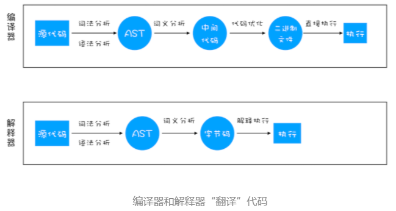
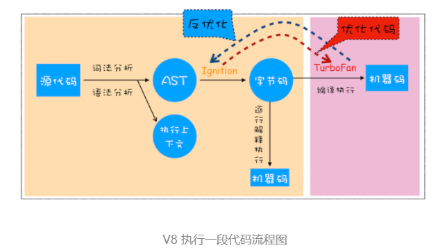
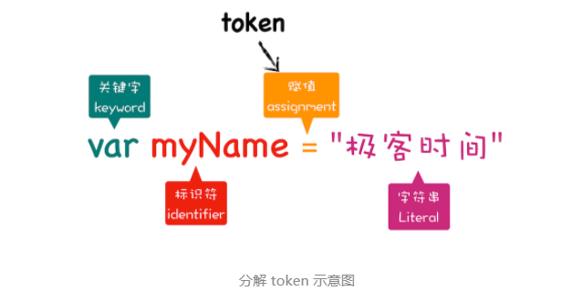
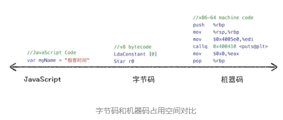

目录：
- 编译器和解释器
- V8 是如何执行一段 JavaScript 代码的
- JavaScript的性能优化
- 总结
编译器和解释器
编译型语言在程序执行之前，需要经过编译器的编译过程，并且编译之后会直接保留机器能读懂的二进制文件，这样每次运行程序时，都可以直接运行该二进制文件，而不需要再次重新编译了。比如 C/C++、GO 等都是编译型语言。
解释型语言编写的程序，在每次运行时都需要通过解释器对程序进行动态解释和执行。比如 Python、JavaScript 等都属于解释型语言。

（1）编译型语言的执行流程：编译器首先会依次对源代码进行词法分析、语法分析，生成抽象语法树（AST），然后是优化代码，最后再生成处理器能够理解的机器码。如果编译成功，将会生成一个可执行的文件。但如果编译过程发生了语法或者其他的错误，那么编译器就会抛出异常，最后的二进制文件也不会生成成功。
（2）解释型语言的执行流程：解释器也会对源代码进行词法分析、语法分析，并生成抽象语法树（AST），不过它会再基于抽象语法树生成字节码，最后再根据字节码来执行程序、输出结果。
V8 是如何执行一段 JavaScript 代码的
V8 在执行过程中既有解释器 Ignition，又有编译器 TurboFan。其全局执行流程如下所示：

生成抽象语法树（AST）和执行上下文
首先，将源代码转换成抽象语法树（AST）和执行上下文。高级语言是开发者可以理解的语言，而对于编译器和解释器来说他们可以理解的就是抽象语法树（AST）。这和渲染引擎将HTML格式的文件转换为自己可以理解的DOM树类似。
AST 是非常重要的一种数据结构，在很多项目中有着广泛的应用。其中最著名的一个项目是 Babel。Babel 是一个被广泛使用的代码转码器，可以将 ES6 代码转为 ES5 代码，这意味着你可以现在就用 ES6 编写程序，而不用担心现有环境是否支持 ES6。Babel 的工作原理就是先将 ES6 源码转换为 AST，然后再将 ES6 语法的 AST 转换为 ES5 语法的 AST，最后利用 ES5 的 AST 生成 JavaScript 源代码。
除了 Babel 外，还有 ESLint 也使用 AST。ESLint 是一个用来检查 JavaScript 编写规范的插件，其检测流程也是需要将源码转换为 AST，然后再利用 AST 来检查代码规范化的问题。
生成AST的两个阶段：
第一阶段是分词（tokenize），又称为词法分析，其作用是将一行行的源码拆解成一个个 token。所谓token，指的是语法上不可能再分的、最小的单个字符或字符串。

从图中可以看出，通过var myName = “极客时间”简单地定义了一个变量，其中关键字“var”、标识符“myName” 、赋值运算符“=”、字符串“极客时间”四个都是 token，而且它们代表的属性还不一样。
第二阶段是解析（parse），又称为语法分析，其作用是将上一步生成的 token 数据，根据语法规则转为 AST。如果源码符合语法规则，这一步就会顺利完成。但如果源码存在语法错误，这一步就会终止，并抛出一个“语法错误”。
有了 AST 后，那接下来 V8 就会生成该段代码的执行上下文。
生成字节码
有了 AST 和执行上下文后，那接下来的第二步，解释器 Ignition 就登场了，它会根据 AST 生成字节码，并解释执行字节码。
字节码就是介于 AST 和机器码之间的一种代码。但是与特定类型的机器码无关，字节码需要通过解释器将其转换为机器码后才能执行。

从图中可以看出，机器码所占用的空间远远超过了字节码，所以使用字节码可以减少系统的内存使用。
执行代码
通常，如果有一段第一次执行的字节码，解释器 Ignition 会逐条解释执行。在执行字节码的过程中，如果发现有热点代码(HotSpot)，比如一段代码被重复执行多次，这种就称为热点代码，那么后台的编译器(TurboFan) 就会把该段热点的字节码编译为高效的机器码，然后当再次执行这段被优化的代码时，只需要执行编译后的机器码就可以了，这样就大大提升了代码的执行效率。
其实字节码配合解释器和编译器是最近一段时间很火的技术，比如 Java 和 Python 的虚拟机也都是基于这种技术实现的，我们把这种技术称为即时编译（JIT）。
JavaScript的性能优化
主要关注以下三点：
- 提升单次脚本的执行速度，避免 JavaScript 的长任务霸占主线程，这样可以使得页面快速响应交互；
- 避免大的内联脚本，因为在解析 HTML 的过程中，解析和编译也会占用主线程；
- 减少 JavaScript 文件的容量，因为更小的文件会提升下载速度，并且占用更低的内存。
总结
（1）解释器和编译器在执行代码时都会先将代码通过词法分析、语法分析生成抽象语法树（AST），不同的是解释型语言会通过解释器将AST转换为字节码并直接逐条执行；而编译器会在AST的基础上先优化代码然后生成机器码进而编译生成二进制文件，执行时直接执行这个二进制文件。
（2）JavaScript的编译流程是：先通过词法分析和语法分析生成AST和可执行上下文，然后通过解释器将AST转换为字节码，并逐条执行。在生成AST时主要分为两步：第一步先通过词法分析生成token，第二步通过语法分析将token转换为AST。
（3）V8在代码的编译过程中采用的JIT（即时编译）技术来实现的。就是在生成字节码后，先使用解释器逐条解释并执行代码，如果遇到热点代码（被多次重复执行的代码），就会把这段字节码通过编译器编译为机器码，当再次遇到改代码是就可以直接执行。